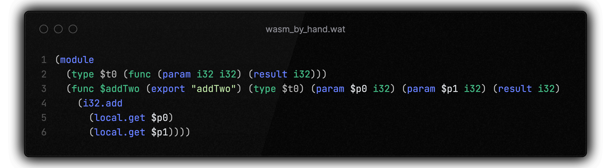

Gabor Javorszky, November 28th 2024
Senior Engineer, Software at F5 Networks, NGINX team. This presentation is in a personal capacity.
Previously at a startup called Suborbital (bought by F5). We built a SaaS that allowed our customers to run their customers' untrusted code safely within their or our infrastructure using WebAssembly.
Now in the NGINX team working on Unit, a universal web server, that allows users to run wasm components within the wasi-http world.
What is wasm?
What is untrusted code?
What is “securely” in this context?
What does the Universe have to do with this?
What is wasmtime, WASI, and the bytecode alliance?
WebAssembly (abbreviated Wasm) is a binary instruction format for a stack-based virtual machine. Wasm is designed as a portable compilation target for programming languages, enabling deployment on the web for client and server applications.
from webassembly.org
Go
.NET
.Rust
C
C++
Kotlin
AssemblyScript
D
Zig
Haskell
Grain
.NET
⇒ .wasm
x86
amd64
aarch64
arm
RISC-V
MIPS
⇐ .wasm
You write it yourself. Don't actually do this. At this point you're manually shuffling bytes. Specification and demo.
You take a pre compiled wasm component and run it yourself
$ wasmtime serve -Scli \
--dir /path/to/local/directory::/guest/directory \
your_component.wasm
You write your software in a language, like Rust, and then compile it down to wasm. I'm going to focus on this.
As WebAssembly components are compiled binary artifacts, they need something to run them. They are called runtimes. Several of them exist:
We've chosen wasmtime to run the components we're handed for a number of reasons, but security is the absolute top one.
Many mitigations against accidentally compromising a system.
Formal verification using the Coq project and Isabelle.
Continuous (24/7) fuzz testing of the entire codebase.
Bespoke Spectre mitigations both in the WebAssembly spec, and in wasmtime itself.
The bytecodealliance has an article on their security practices: Security and Correctness in wasmtime.
WebAssembly programs are sandboxed and isolated from one another and from the host, so they can’t read or write external regions of memory, transfer control to arbitrary code in the process, or freely access the network and filesystem.
From the blog post linked.
... But these security properties only hold true if the WebAssembly runtime’s implementation is correct. This article will highlight the ways we are ensuring correctness in the Wasmtime WebAssembly runtime and in its compiler, Cranelift.
From the blog post linked.
Because each wasm component gets run in a runtime, that runtime is responsible for providing resources to the components. Those resources include:
The combination of these is called a world.
Provides
Wants
Just because a runtime provides an interface for a set of functionality, doesn't mean the component will get real data.
As an example: the world might say "you can call a function to get the system time", but the world might also not have access to system time.
Will return a mock value, 1970 January 1st usually.
Files need to be explicitly mounted into the runtime, much like in Docker.
"You have access to these files and folders at these virtual locations."
WebAssembly System Interface
...group of standards-track API specifications for software compiled to the [...] Wasm standard. WASI is designed to provide a secure standard interface for applications that can be compiled to Wasm from any language...
A set of interfaces for common use cases: HTTP, filesystem, I/O, clocks, random, sockets, CLI, and more, provided as WIT world files.
See WASI.dev for more info.
Components do not have access to anything on the host system by default. Everything needs to be very explicitly enabled and made available to them (exported).
You can't misuse something that doesn't exist.
If you have a provide-nothing runtime, and a component that needs functionality, you can compose that component with another one that will export the needed functions, returning mock data.
Runtime provides
Nothing
Component needs
Runtime provides
Nothing
Bridge component
Imports nothing
Exports:
Component needs
Client hands you a .wasm component that uses your specific world, or any of the WASI worlds.
You can then run it with wasmtime without worrying that the component will do anything unexpected.